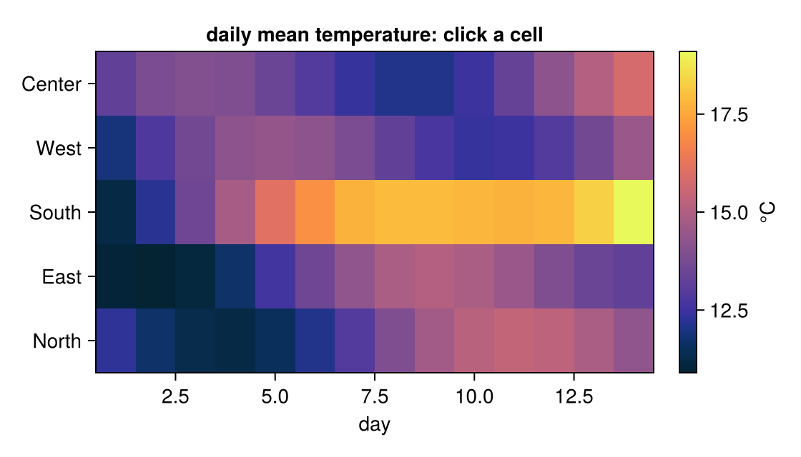

From a heatmap cell to its trace
A heatmap summarizes. Clicking a cell should take you back to the data behind the summary. Here each cell is a station's mean temperature for one day of a week; click one and the plot below shows that day's hourly readings, with the daily mean as a dashed line.
Notebook as text
Click a cell. The plot below shows that station's readings, hour by hour, on the day you clicked.
The heatmap is a summary: one daily mean per station and day. temp is the underlying hourly model, so a click can go back to the detail behind the summary. RectInteractable makes each cell clickable.
begin
stations = ["North", "East", "South", "West"]
hours = 0:23
temp(d, s, h) = 12 + 4 * sin(2π * (h - 9) / 24) + 0.6 * d * (s == 3 ? 1 : 0.3) + 1.5 * cos(d / 2 + s)
daily = [round(sum(temp(d, s, h) for h in hours) / 24; digits = 1) for d in 1:7, s in eachindex(stations)]
fig = Figure(size = (560, 320))
ax = Axis(fig[1, 1]; xlabel = "day", yticks = (eachindex(stations), stations), title = "daily mean temperature: click a cell")
hm = heatmap!(ax, 1:7, eachindex(stations), daily; colormap = :thermal)
Colorbar(fig[1, 2], hm; label = "°C")
cells = RectInteractable(ax, hm)
nothing
end@bind pick stores the clicked cell. pick.i is the day and pick.j the station, both 1-based, and pick.value is the daily mean.
@bind pick masque(fig, cells)
This cell reads pick, so a click redraws the day behind the cell, with the daily mean as a dashed line.
begin
trace = Figure(size = (560, 240))
if pick === nothing
Axis(trace[1, 1]; xlabel = "hour", ylabel = "°C", title = "click a cell to see that day")
else
tax = Axis(
trace[1, 1]; xlabel = "hour", ylabel = "°C",
title = "$(stations[pick.j]), day $(pick.i): mean $(pick.value) °C"
)
lines!(tax, hours, [temp(pick.i, pick.j, h) for h in hours]; linewidth = 2)
hlines!(tax, [pick.value]; linestyle = :dash, color = :gray)
end
trace
endOn this page every cell's trace is recorded as a snapshot; in your own notebook, every click redraws the day.
How it works
RectInteractable makes each heatmap cell clickable. A click makes pick a GridCellEvent: pick.i is the column (the day) and pick.j the row (the station), both 1-based, so they index the same data the heatmap was built from, and pick.value is the cell's value. The last cell uses pick.i and pick.j to recompute the detail — here from the hourly model, in practice from your raw measurements.
Variations
- Look the detail up instead of recomputing it: filter a table of raw readings by the clicked day and station.
- Show a table or summary statistics for the clicked cell instead of a line plot.
- Brush a block of cells with an
ROIInteractablewhoseselectsnames the grid; the value is aGridWindowEvent, andA[win]is that block of the matrix.
Inspect a grid covers hovering and clicking cells in detail.